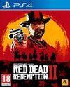
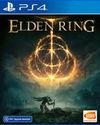
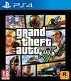

Persona 5 Royal
Persona 5: Royal es la versión extendida y mejorada del exitoso videojuego del rol japonés producido por ATLUS para consolas. La quinta entrega tiene ahora una nueva edición que, si bien nos sigue contando una épica historia en la que un grupo de estudiantes adolescentes tendrán que enfrentarse a una amenaza sobrenatural gracias a sus Persona, unos alter ego especiales, añadirá nuevas zonas, personajes y características jugables.

Red Dead Redemption 2
Red Dead Redemption 2 es la secuela del videojuego de éxito de Rockstar Red Dead Redemption (2010), considerado como uno de los mejores títulos de la compañía.

Elden Ring
Elden Ring es el nuevo videojuego de FromSoftware, creadores de Dark Souls, Sekiro o Bloodborne. Se trata del nuevo título de acción y rol para un jugador ideado por Hidetaka Miyazaki, que en esta ocasión, estrenará un mundo abierto más grande y ambicioso

The Last of Us Remasterizado
The Last of Us Remasterizado (The Last of Us Remastered) es una aventura de acción desarrollada por Naughty Dog y publicada por Sony Computer Entertainment para PlayStation 4.
Grand Theft Auto V
Grand Theft Auto V para PS4 y Xbox One es una versión mejorada y ampliada del videojuego de acción en mundo abierto Grand Theft Auto V desarrollado por Rockstar lanzado en 2013. Esta versión del éxito, más ambiciosa técnicamente, presenta gráficos y nuevo contenido como armas, vehículos o misiones, además de una banda sonora ampliada y más jugadores en el modo online.
